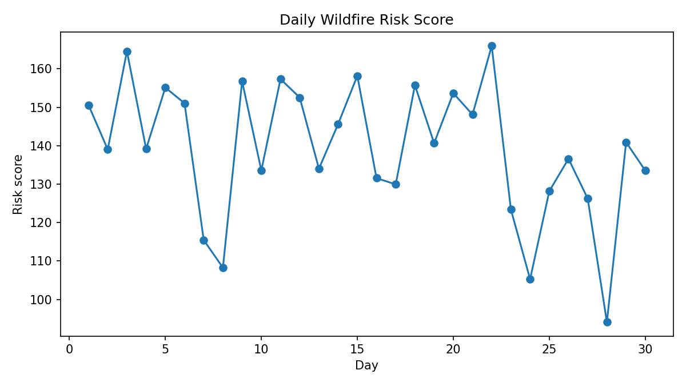

1. Meeting the brief
This project responds to the forest-themed brief by creating a functional monitoring system that collects environmental data, analyses wildfire risk and adapts its output to changing conditions. The system uses a sensor simulator to generate thirty days of environmental readings for temperature, humidity, soil moisture and light intensity. These values are stored in a CSV dataset and then analysed by a Python wildfire model.
The artefact addresses the basic requirements by simulating environmental inputs, storing the collected data and showing how the system behaves when conditions change. It also addresses the advanced requirements through a Python disaster-risk model, two what-if simulations and an adaptive alert mechanism. The model produces a risk score for each day and converts that score into green, amber or red alert states. This means the system responds automatically when the environmental data becomes more dangerous.
The video included in this section should demonstrate the full artefact in operation. It should show the sensor simulator creating the dataset, the wildfire model producing risk scores and alerts, and the scenario analysis comparing changed environmental conditions with normal conditions. Screenshots and charts are included below to support the explanation of the artefact.


2. Investigation
I began by researching the importance of forests and the main environmental factors linked to wildfire risk. Forests play an important role in carbon storage, biodiversity protection and climate regulation, but they become more vulnerable when weather is hotter and the ground becomes dry. I then looked at examples of environmental monitoring systems, classroom weather stations and wildfire early warning systems to understand how sensor-based projects are usually structured.
From this research I identified four variables that could be clearly linked to wildfire conditions: temperature, humidity, soil moisture and light intensity. Temperature and light are associated with heat and drying conditions, while humidity and soil moisture help indicate how wet or dry the environment is. I decided to use these variables because they are easy to explain and suitable for a simple computational model.
I also considered whether to build the project around biodiversity loss, drought monitoring or wildfire detection. Wildfire risk was the best choice because it allowed me to include data collection, a clear mathematical model, visible outputs and two useful what-if simulations. I reviewed the project brief and decided that a simulated environmental monitoring system would still allow me to demonstrate the full data flow from input to adaptive output. This investigation directly informed the final structure of the artefact and the choice of graphs used in the report.
3. Plan and design
At the planning stage I considered several project options. One option was a basic plant watering monitor. Another was a biodiversity observation system. A third was a forest fire risk monitoring system. I selected the wildfire project because it matched the brief most effectively: it could include environmental data collection, a computer-based model, predictive analysis and an adaptive feedback response within one coherent artefact.
The key stakeholders are forest managers, environmental researchers and local authorities. Forest managers need early warning information so that dangerous conditions can be identified before a fire spreads. Environmental researchers need structured data that can be compared across conditions and scenarios. Local authorities need clear and simple outputs that can support environmental awareness and decision-making. For these users, the system had to be easy to run, easy to interpret and supported by visual charts.
The project uses Python for the core computational artefact, CSV files for structured data storage, and HTML/CSS for the local report website. Python was chosen because it supports file handling, data analysis and mathematical modelling. CSV files were used because they are simple to create, inspect and reuse between the different stages of the project. HTML and CSS were chosen because the brief requires the report to be presented as a website that can be opened locally without internet access.
The final architecture follows a clear sequence. First, the sensor simulator creates a structured environmental dataset. Second, the wildfire model reads the dataset and calculates a daily wildfire risk score. Third, the adaptive alert logic assigns a green, amber or red alert. Fourth, the scenario program tests how the same model behaves when temperature increases or soil moisture decreases. Finally, charts are generated to visualise patterns and comparisons. This structure made the project easier to develop, test and explain.

4. Create
The first milestone was creating the sensor simulator. This script acts as the data collection stage of the artefact. It generates thirty days of environmental readings and writes them into dataset.csv. I tested this stage by checking that the file was created correctly, that every row was written, and that the generated values stayed within realistic ranges for temperature, humidity, soil moisture and light intensity.
The second milestone was creating the wildfire model. This script reads the dataset and calculates a wildfire risk score for every day. The model uses a weighted formula that combines temperature, air dryness, soil dryness and light intensity. The logic is that higher temperatures, lower humidity, lower soil moisture and stronger light should increase the risk score. After the score is calculated, the program assigns an alert state: green for lower risk, amber for medium risk and red for high risk. This stage was tested by checking that hotter and drier rows produced larger scores than cooler and wetter rows.
The third milestone was implementing the adaptive response. The model automatically changes the output alert state based on the score, which means the system responds to updated environmental conditions without requiring the user to make another decision. This satisfied the adaptive element of the brief. I checked this stage by reviewing the output file and counting how many days fell into each alert category.
The fourth milestone was building the what-if simulations. Two scenarios were created. In the first scenario, temperature was increased by 5°C to represent hotter weather. In the second scenario, soil moisture was reduced by 15% to represent drier conditions. The same wildfire formula was then reused so that the scenario results could be compared fairly with the normal conditions. The scenario results were saved to a new CSV file and visualised with a comparison chart.
Testing took place throughout development. I tested file creation, column names, risk calculations, alert thresholds and scenario outputs. I also generated charts to check whether the patterns in the data looked sensible. One problem I encountered was that the original risk formula produced too many red-alert days, which made the results look unrealistic. To solve this, I adjusted the weight values and the alert thresholds, then reran the model until the results were more balanced while still responding correctly to hotter and drier conditions.
In detail, the wildfire model calculates dryness using 100 - soil_moisture and air dryness using 100 - humidity. Light intensity is scaled down so that it contributes to the score without dominating it. These components are combined into one risk score, rounded to two decimal places and written to the processed dataset. This processed data becomes the input for the scenario testing and the final visual analysis. Overall, the creation stage produced a complete artefact with data collection, modelling, scenario testing and adaptive alerting.


5. Evaluation
The final artefact successfully meets the main goals of the project. It collects and stores environmental data, analyses that data using a Python wildfire model, and automatically changes the alert output when the risk becomes high. It also includes two what-if simulations, which makes the project more useful because it shows how the same environment could behave under changed future conditions.
One strength of the artefact is its clear structure. The files run in a logical sequence and the outputs can be inspected at each stage. Another strength is that the charts make the results easy to interpret. The scenario comparison chart is especially useful because it shows that the model responds in a sensible way when temperature rises or soil moisture falls.
The main limitation is that the project uses simulated sensor data rather than live readings from physical hardware. In a future iteration, I would connect a real microcontroller and environmental sensors so that the data could be collected in real time. I would also add a small dashboard to display alerts live and allow the user to adjust thresholds more easily. Even with these limitations, the current artefact demonstrates the main ideas of environmental monitoring, risk modelling and adaptive response in a clear and testable way.
6. References
- State Examinations Commission. Leaving Certificate Computer Science Coursework Project Brief 2026.
- Raspberry Pi Foundation. Educational examples of environmental monitoring and classroom data projects.
- micro:bit Educational Foundation. Weather-station and environmental sensing project ideas.
- Public forestry and climate background resources listed in the project brief, including environmental and wildfire context materials.
7. Summary word count
| Section | Word count |
|---|---|
| 1. Meeting the brief | 220 |
| 2. Investigation | 207 |
| 3. Plan and design | 287 |
| 4. Create | 422 |
| 5. Evaluation | 182 |
| Total | 1318 |